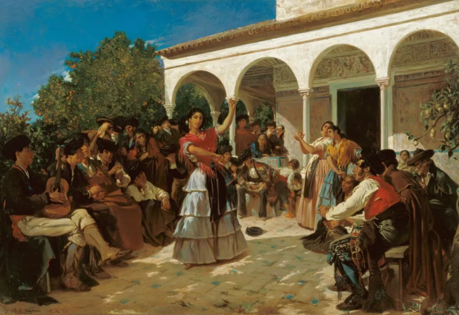

Historia del Flamenco

Se cree que el género flamenco surgió a finales del siglo XVIII en ciudades y villas agrarias de la Baja Andalucía, destacando Jerez de la Frontera como primer vestigio escrito de este arte. Existen hipótesis que apuntan a la influencia en el flamenco de tipos de baile provenientes del subcontinente indio (lugar de origen del pueblo gitano).
De todas las hipótesis sobre su origen, la tesis más extendida es la que expone el origen diverso desde los romances cantados castellanos hasta la música de los moriscos o la sefardí. El mestizaje cultural que por entonces se dio en Andalucía (oriundos, musulmanes, castellanos) propició su creación. De hecho, ya existía en la región de Andalucía su germen mucho antes de que los gitanos llegaran, teniendo también en cuenta que había gitanos en otras regiones de España y de Europa, pero el flamenco fue únicamente cultivado por los que se encontraban en Andalucía.